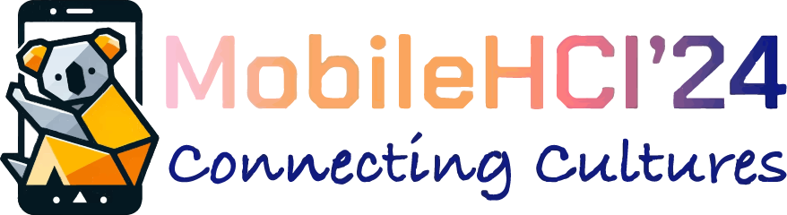

ChitChatGuide:
Conversational Interaction Using Large Language Models for Assisting People with Visual Impairments to Explore a Shopping Mall
Abstract
To enable people with visual impairments (PVI) to explore shopping malls, it is important to provide information for selecting destinations and obtaining information based on the individual's interests. We achieved this through conversational interaction by integrating a large language model (LLM) with a navigation system. ChitChatGuide allows users to plan a tour through contextual conversations, receive personalized descriptions of surroundings based on transit time, and make inquiries during navigation. We conducted a study in a shopping mall with 11 PVI, and the results reveal that the system allowed them to explore the facility with increased enjoyment. The LLM-based conversational interaction, by understanding vague and context-based questions, enabled the participants to explore unfamiliar environments effectively. The personalized and in-situ information generated by the LLM was both useful and enjoyable. Considering the limitations we identified, we discuss the criteria for integrating LLMs into navigation systems to enhance the exploration experiences of PVI.
30-sec Preview Video
Main Video [2:15]
Publications
Yuka Kaniwa*, Masaki Kuribayashi*, Seita Kayukawa, Daisuke Sato, Hironobu Takagi, Chieko Asakawa, and Shigeo Morishima (* - equal contribution).
2024.
ChitChatGuide: Conversational Interaction Using Large Language Models for Assisting People with Visual Impairments to Explore a Shopping Mall.
In Proceedings of the 26th International Conference on Human-Computer Interaction with Mobile Devices and Services (MobileHCI 2024).
Authors
Carnegie Mellon University
IBM Research - Tokyo
Miraikan - The National Museum of Emerging Science and Innovation
IBM Research
Waseda Research Institute for Science and Engineering
(* - equal contribution)
Acknowledgements
We would like to thank all participants who took part in our user study. We would also thank Xiyue Wang, Gary Vierheller, Kentaro Fukuda, Mitsui Fudosan Co., Ltd., and Miraikan - The National Museum of Emerging Science and Innovation for their support. This work was supported by JSPS KAKENHI (JP23KJ2048).